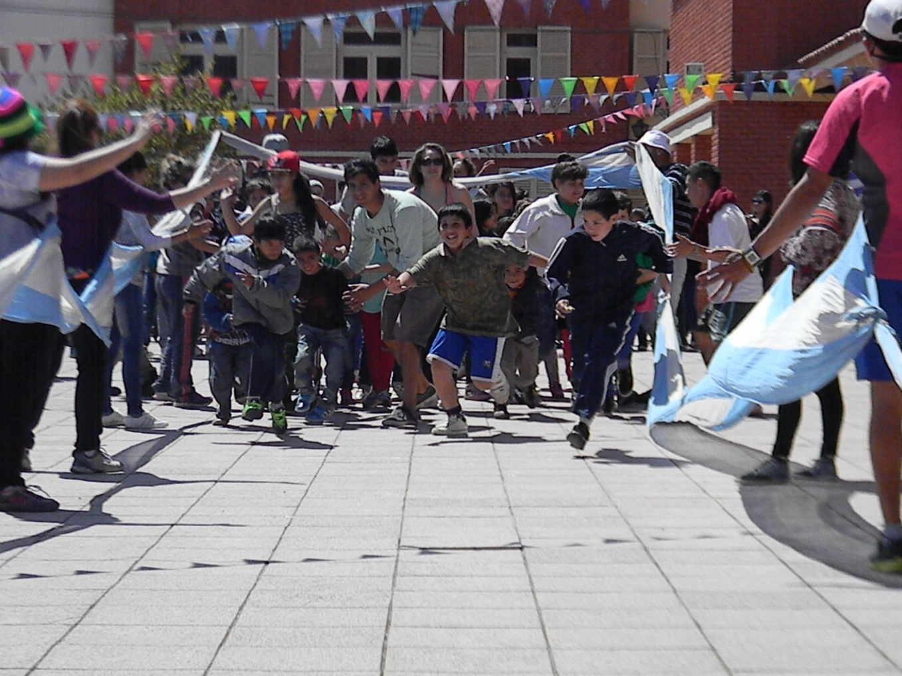
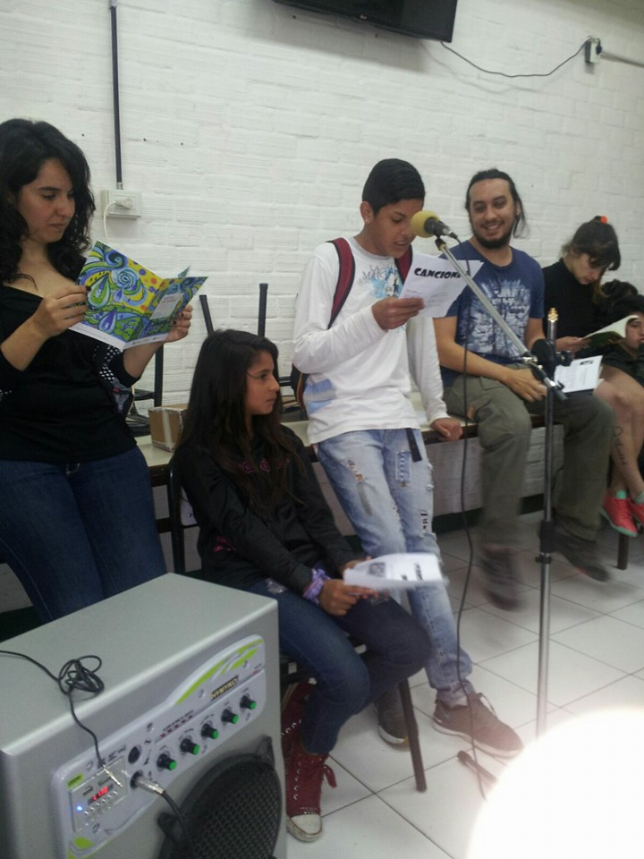
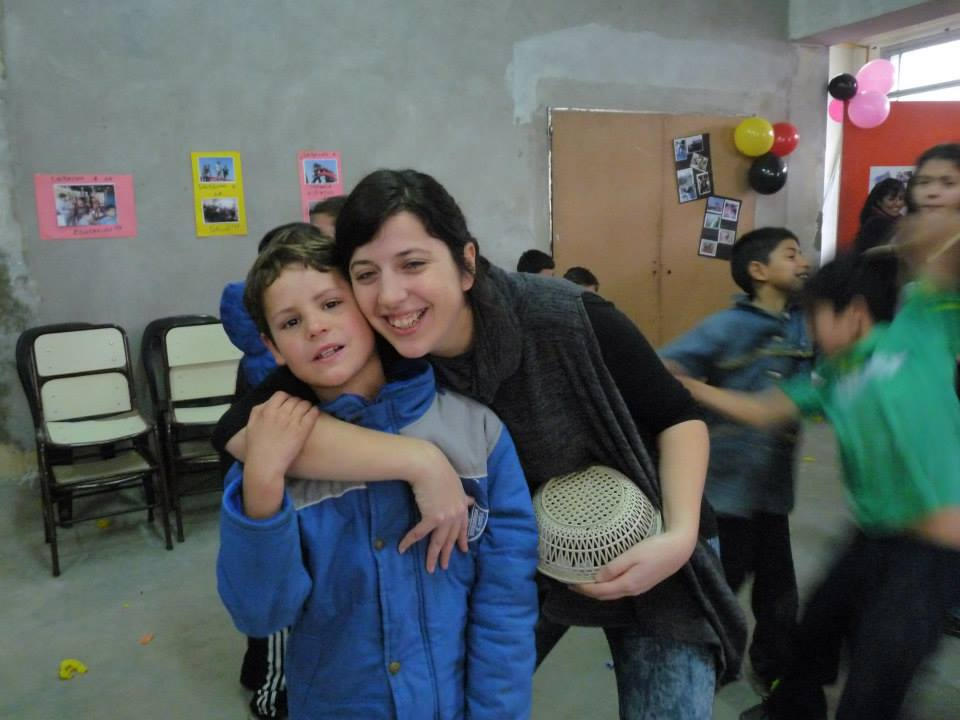

C. A. I Isauro Arancibia
Maestrxs Comunitarios Puentes, caminos y talleristas
Grado de Nivelación

- Las maestras comunitarias trabajaron en el grado de nivelación junto a los docentes del multigrado
- Llevaron a cabo Proyectos de Prácticas del Lenguaje, de Ciencias Sociales y también trabajaron en conjunto con el Equipo de Apoyo del Centro Educativo.
Tercer Ciclo

- El maestro puente articuló acciones con tercer ciclo colaborando en la planificación de actividades para armar algunos trabajos personalizados
- Trabajo con estudiantes que egresaron y proyecto de vida para continuar los estudios secundarios.
Jardín Maternal

- La maestra caminos abordó el trabajo con lxs chicxs de este nivel con sobre edad.
Talleres
- Teatro
- Artes Plásticas
- Radio Infantil
- Marroquinería
- Narración y Expresión artística
Reuniones de equipo | Construcción del colectivo
- Todos los viernes el colectivo del Isauro Arancibia se reúne a tomar decisiones, evaluar y coordinar acciones con los diversos equipos que trabajan en el Isauro.
- Los docentes del C. A. I. participan de las reuniones turnándose para asistir a ella
- El C. A. I. es parte del isauro
Articulaciones con Equipo de Apoyo
- El equipo contó con el apoyo de la trabajadora social del Isauro estableciendo una sólida relación.
Cuento "La ciudad en llamas"
- En la segunda parte del año la Asociación Civil Incluir junto con los docentes del CAI realizamos un Taller de Narración y Expresión Artística
- La ciudad en llamas
Viaje a Córdoba
- Viajaron 38 chicos acompañados por docentes del grado de nivelación, maestros y talleristas
Aumento de la matricula
- Durante el año se aumento un 30% la matrícula alanzando 65 inscriptos